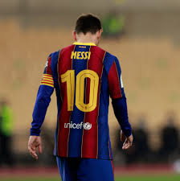
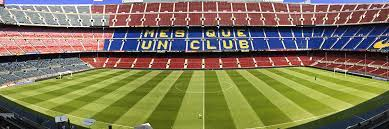

Tanto el club como sus hinchas reciben el apelativo de «culers» (pronunciado culés), y también, en referencia a sus colores, «azulgranas» o «blaugranas», tal como aparece en su himno, el «cant del Barça», el cual en su segunda línea menciona «som la gent blaugrana» (en castellano, «somos la gente azulgrana»). En su oficina de atención al barcelonista se atiende en los tres idiomas oficiales del club, que son el catalán, el castellano y el inglés.
A nivel institucional es uno de los cuatro clubes profesionales de fútbol del país cuya entidad jurídica no es la de sociedad anónima deportiva (S. A. D.), ya que su propiedad recae en sus más de 143 000 socios. Otra salvedad comparte con el Athletic Club y el Real Madrid Club de Fútbol al participar sin interrupción en la máxima categoría de la Liga Nacional de Fútbol Profesional, la Primera División de España, desde su establecimiento en 1929. En ella posee los honores de haber sido el primer campeón histórico de la competición, su segundo club con más títulos, y el de la máxima puntuación en una sola edición.

Lionel Messi, estrella del F.C Barcelona
Sumando torneos nacionales e internacionales, es el segundo club español más laureado, a nivel nacional domina el palmarés con setenta y cinco campeonatos, y a nivel internacional ostenta veintidós trofeos, situado en el segundo puesto europeo. Mismo puesto ocupa como club polideportivo con más copas de Europa contando todas sus secciones profesionales —por detrás del CSKA de Moscú—, con 45.
Según las estadísticas que realiza el IFFHS, el F. C. Barcelona es el mejor equipo de fútbol europeo y mundial de la primera y segunda década del siglo xxi, y lidera el ranking global del siglo con 5228 puntos con una diferencia de 365 puntos sobre el segundo clasificado (Real Madrid C. F.). Es además el equipo de fútbol que más veces ha figurado en los podios del FIFA World Player (19) y del Balón de Oro (34).
Una de las principales características del F. C. Barcelona es su carácter polideportivo. Se distingue por ser una de las instituciones polideportivas más laureadas, entre las que destacan sus secciones de fútbol, baloncesto, balonmano y hockey, todas ellas con un amplio palmarés europeo. Es el primer club europeo en ser campeón continental en la rama masculina y femenina, y el primero en lograr un triplete con ambas. Asimismo, los medallistas olímpicos que han representado a la entidad blaugrana han conquistado once oros, veintitrés platas y veintiocho bronces en las distintas disciplinas deportivas.

Camp Nou, estadio del F.C Barcelona
Nueve exintegrantes del club fueron incluidos en el Salón de la Fama del Fútbol Internacional, un proyecto dedicado a preservar la memoria de relevantes personajes de la historia del fútbol. Entre ellos se incluyen Johan Cruyff, Diego Maradona, Ricardo Zamora, Luís Figo, Ronaldo Nazário, Hristo Stoichkov, Pep Guardiola y Ronaldinho de Assis, a los que se une László Kubala como «decano», o de especial trascendencia.
Otro de sus hechos distintivos es su masa social de socios y aficionados. El club ha logrado integrar de forma estratégica cuestiones políticas, religiosas, culturales y sociales, que van enmarcadas dentro del ámbito deportivo, esto permite que los socios y los aficionados respondan a todos los eventos sociales del club, también que tengan mayor participación en actividades administrativas y se fortalezcan los vínculos entre las peñas. En 2022 contaba con aproximadamente 143 083 socios. Existen, además, 1273 peñas barcelonistas repartidas por todo el mundo.
Sus dos rivales históricos son el Real Madrid Club de Fútbol, contra el que disputa «El Clásico», y el Real Club Deportivo Espanyol, con quien se enfrenta en el «derbi barcelonés», siendo el primero uno de los encuentros de mayor rivalidad e interés del fútbol mundial.